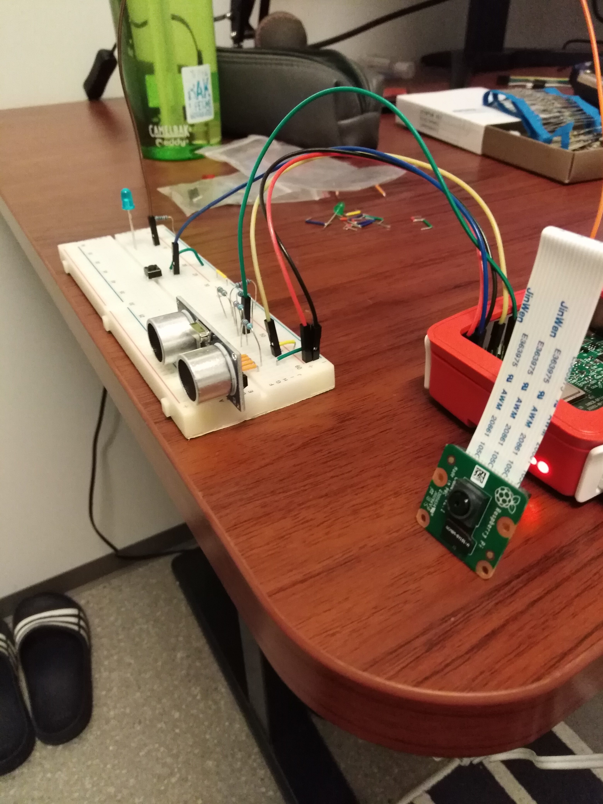
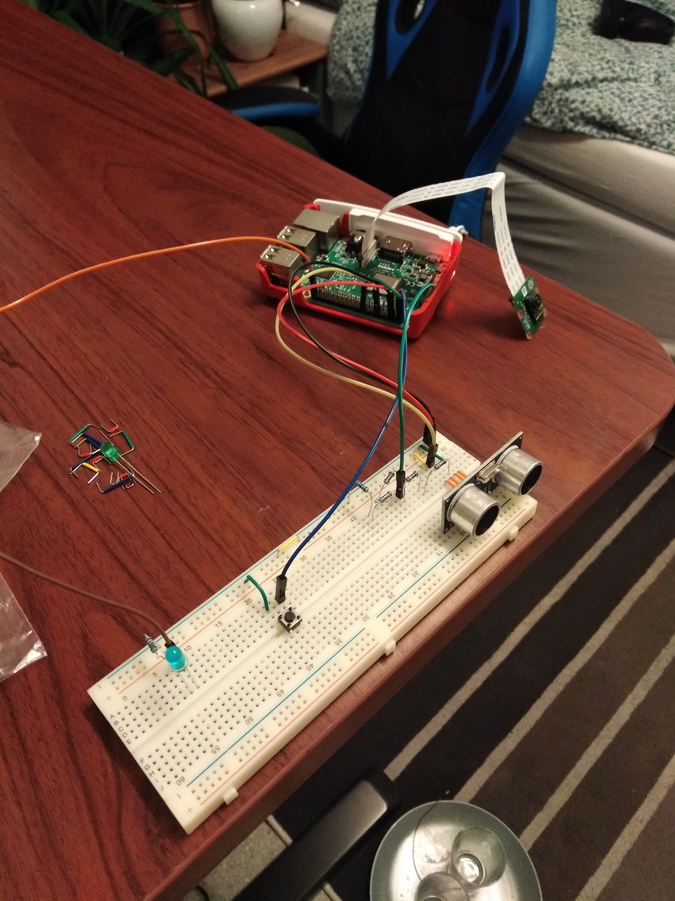
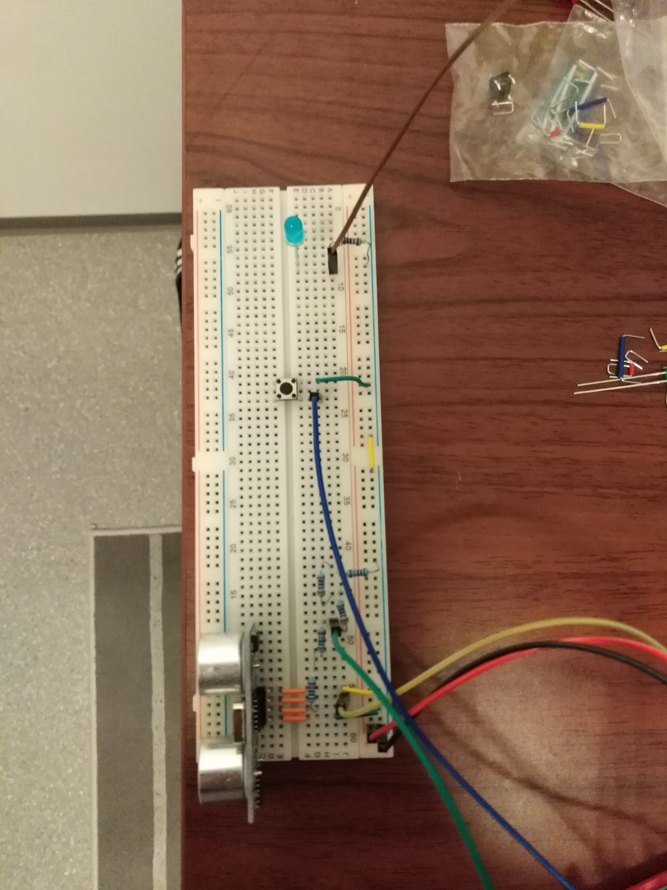
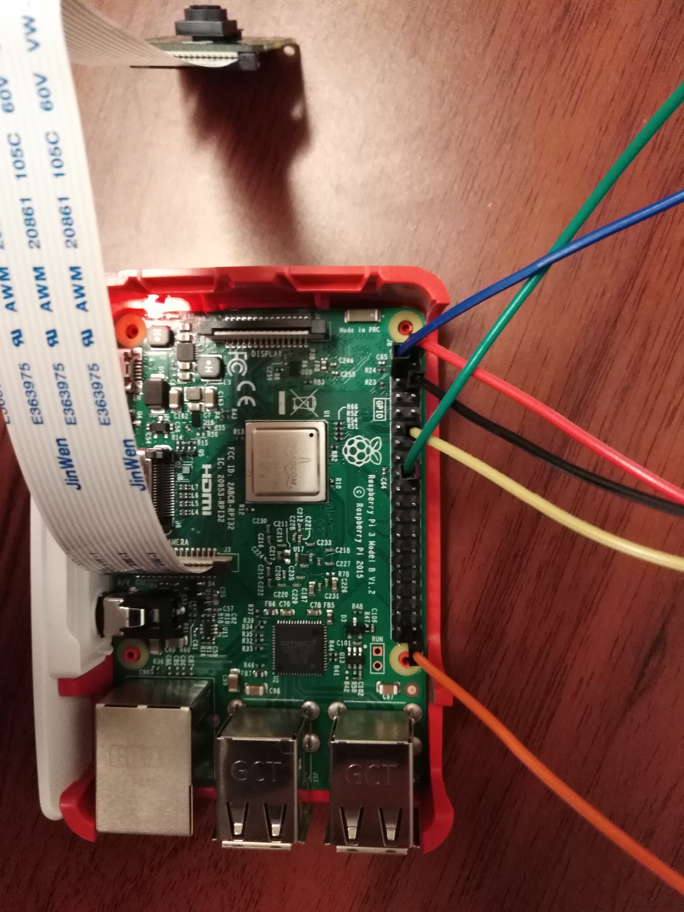
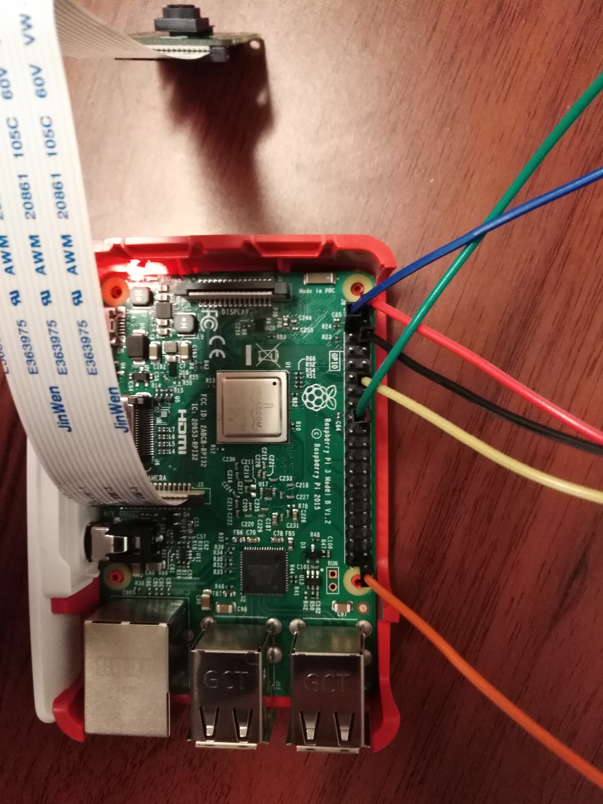

A spy guard
PiSpy the sensor, cameraman
PiSpy is an application for detecting intruders. The application uses an ultra sonic sensor to calculate distance between itself and the object it points to. When this distance becomes less than a constant value, it would mean that something has moved in between it and another object. Meaning a person possible moved into the sensors view. When this happens a camera will be activated filming for 15 seconds hopefully catching the intruder. The application has a button for starting and pausing the sensor. Pressing the button while the sensor is of will cause a LED, to turn on for 5 seconds, then it will turn of and the sensor is active. If the sensor is on, and the button is pressed, the sensor will turn of and the LED will blink 3 times, to indicate the sensor is off.
What you need:
- Ultrasonic sensor HC-SR04
- Raspberry Pi Camera Module V2
- 6x Male-Female pins
- 6x 220 Ohm resistors
- Button
- LED
- Raspberry Pi
How to make
Ultrasonic sensor HC-SR04
We are using a Raspberry Pi 3 model B, for this project. First find a 5V and ground pin on your Pi. Connect these to the breadboard + and - respectively, with male female pins. This will mainly give power for the sensor, and work as ground for other components. Then we want to connect the both of the to the sensors VCC and ground. When we have done this, we will need to connect the trigger and echo pins of the GPIO in the raspberry pi. Because the GPIO pins of the raspberry pi, can't handle more then 3 volts, without risking permanent dmg to the Pi we'll need to set uå some resistors. Actually there are resistors that can give the right ammount of resistance need for this project, but because i only had 220 ohm as my lowest resistor, i choose to set up multiple in sequence to sum to a restance value that was more near what was needed, then setting up 10 K-Ohms resistors. I will link to the turtorial I used for more spesific and better setup of the resistors and pins to GPIO here here: https://tutorials-raspberrypi.com/raspberry-pi-ultrasonic-sensor-hc-sr04/
Programming the sensor
The turtorialabove was also used to lean more about, how to program sensor. Now in my application I just used gpiozero library, which was alot simpler then the turtorial above. The above uses RPi.GPIO library, and has the advantage of being able to calc distances above 1 meter. This project does not need more than 1 meter of distance, so thats why I took the simpler approach of of using gpiozero. The programming is nothing special, tell what GPIO pins to used and you can get the distance from the field "distance" of the DistanceSensor object. Then program so that when this length is less than hundred recording from the camera will start.
Raspberry Pi Camera Module V2
The camera is plugged directly into the raspberry pi's camera pluggin. There is written camera right on top of it. When this is conected you need to activated the raspberry pi interface on the pi itself. This is done in Raspian OS. Go to Raspberry pi configuration -> interface and enable camera, inorder to use it.
Programming the camera
Some of it has already been spoiled in the above section, but I will also say that, you will need to tell what path to put the video in when you start the recording. To make things more easy find and see when it happened, I also added the time when the camera starts recording to name of the file.
Button and LED
The button is used to give input to the Pi of what to do, and the LED functions as a repsonder. The button and LED is also connected to GPIO in order to get input and give output , respectively.
Programming button and LED
The gpiozero library makes it very easy to program the button and LED. With the Button object you can easily just tell what pin it used, and what it shall do when pressed and released. Same goes for the LED which has a LED object, which supports a on and off method which turns LED on and off. The logic behind the programming of this is that a global variable sens_on, controlls when the sensor is on an off. But it also controlls how the LED will respond when the button is released. In turn the button also changes the sens_on to its opposite. When sens_on is False, the sensor is off(actually i don't think it ever goes of but its constantly refreshing the distance field to what ever distance it reads, but we are not reading this field when sens_on is False), when we release the button again now the LED will glow for 5 seconds and then turn off, to indicate the sensor now is on. However if the sens_on is true the sensor is on, and when the button is released then it will blink 3 times to indicate that the sensor has been turned off, changing the sens_on variable in the process.
GitHub, videos and images.
Click here to find the code for this project GITHUB PiSpy
Check out some of the images and videos below of the project!
   
